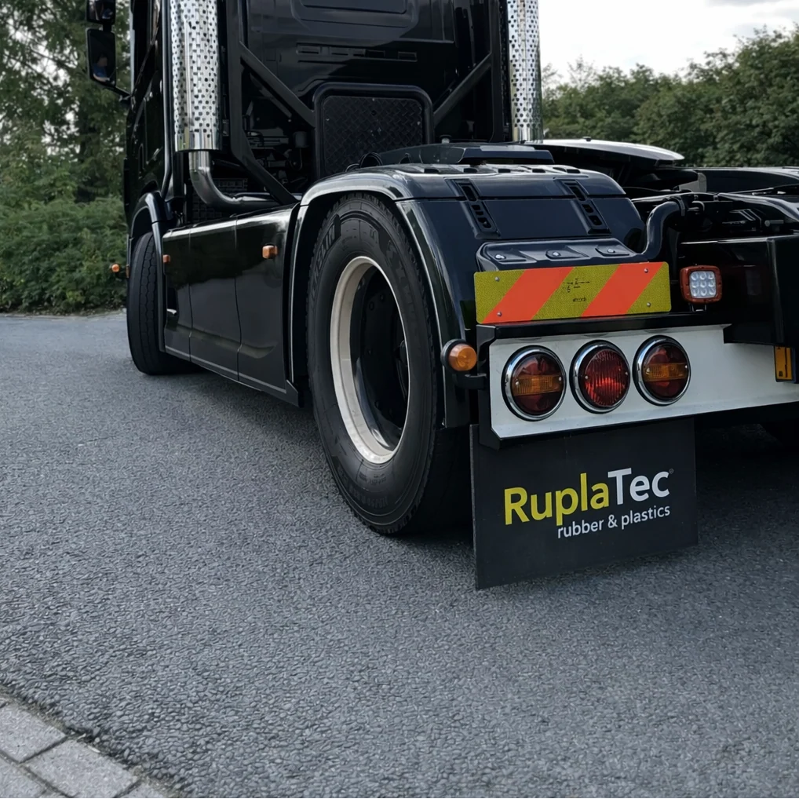
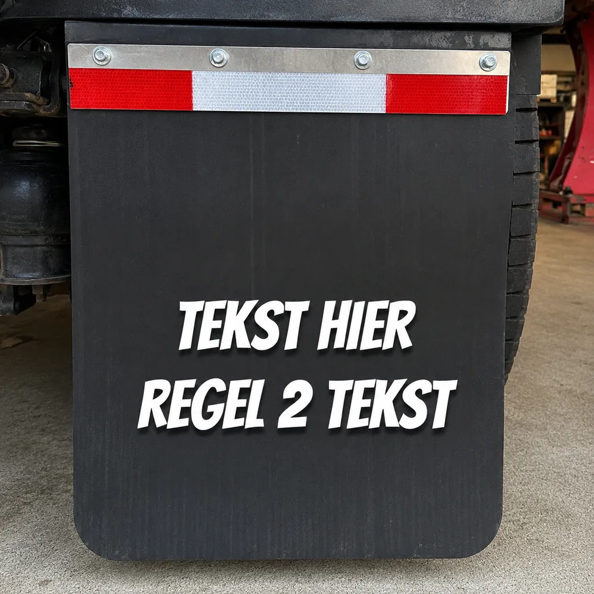

Vrachtwagens en trekkers
Voor montage achter één of meerdere assen, afgestemd op de beschikbare ruimte en het gebruik.
Maatwerk voor ieder voertuig
Laat een losse spatlap, een complete set of een serie voor je wagenpark maken. We stemmen maat, materiaal, bevestiging en bedrukking af op jouw voertuig en toepassing.

Een standaard spatlap past niet altijd bij het voertuig, de opbouw of het bestaande gatenpatroon. Maatwerk is geschikt voor vervanging, een afwijkende montage en een herkenbare uitstraling voor één voertuig of een volledig wagenpark.
Voor montage achter één of meerdere assen, afgestemd op de beschikbare ruimte en het gebruik.
Losse vervanging, een complete set of een uniforme uitvoering voor meerdere combinaties.
Passend gemaakt bij wiel, spatbord, carrosserie en bestaande bevestigingspunten.
Voor voertuigbouw, landbouwtoepassingen en constructies waarvoor geen standaardmaat beschikbaar is.
We produceren op basis van de gewenste toepassing. Daardoor kunnen niet alleen lengte en hoogte, maar ook vorm, dikte, flexibiliteit, bevestiging en afwerking worden aangepast.
Recht, afgerond, met uitsparingen of gebaseerd op een oude spatlap, schets of technische tekening.
Flexibel rubber of een geschikte kunststof, gekozen op basis van formaat, belasting en gewenste bedrukking.
Een gladde uitvoering of een spatlap met een water- en vuilremmende achterzijde, afhankelijk van toepassing en technische eisen.
Bevestigingsgaten, uitsparingen en eventuele versteviging kunnen in het maatwerk worden meegenomen.

Gebruik de spatlap voor een bedrijfslogo, naam, webadres, voertuignummer, slogan of een compleet eigen ontwerp. Ook meerdere kleuren of juist een volledig blanco uitvoering kunnen worden besproken.
Een vectorbestand zoals PDF of SVG heeft de voorkeur. Een duidelijke PNG, foto of bestaand voorbeeld mag ook; we beoordelen wat bruikbaar is.
Omdat iedere aanvraag anders is, werken we met een prijsvoorstel op maat. De prijs wordt onder meer bepaald door afmetingen, materiaal, dikte, vorm, gaten, bedrukking en het aantal exemplaren.
Voor iedere maatwerkorder zijn vaste voorbereidingen nodig. Het ontwerp en de maatvoering worden gecontroleerd, bestanden worden productieklaar gemaakt en de productie wordt ingesteld. Die werkzaamheden zijn voor één spatlap vrijwel hetzelfde als voor meerdere gelijke exemplaren.
Bestel je een grotere oplage, dan worden deze opstartkosten over meer stuks verdeeld. Daardoor daalt de prijs per spatlap doorgaans. Een enkel exemplaar blijft mogelijk, maar een serie is relatief voordeliger.
Ontvang een prijsvoorstelJe hoeft vooraf nog niet iedere technische keuze te kennen. Met de toepassing, globale maten en een foto of ontwerp kunnen we de mogelijkheden beoordelen.
Geef het voertuigtype, de globale maat, het aantal en de gewenste uitvoering door.
Upload een foto, oude spatlap, schets, logo of ontwerpbestand bij je aanvraag.
We beoordelen de technische mogelijkheden en sturen een prijsvoorstel met de gemaakte keuzes.
Na akkoord en eventuele ontwerpcontrole wordt de afgesproken uitvoering geproduceerd.
Staat jouw vraag er niet tussen? Stuur een foto of korte omschrijving, dan kijken we mee.
De breedte, hoogte, vorm, uitsparingen en positie van bevestigingsgaten kunnen op de toepassing worden afgestemd. Stuur een foto, tekening of oude spatlap mee, zodat we kunnen beoordelen welke uitvoering passend is.
Ook een enkel exemplaar kan worden aangevraagd. Houd er rekening mee dat één stuk relatief duurder is, omdat de voorbereiding en productie-instelling niet over meerdere gelijke exemplaren kunnen worden verdeeld.
Doorgaans wel. De vaste opstartkosten worden bij een grotere oplage over meer stuks verdeeld. Formaat, materiaal, bedrukking en eventuele bewerkingen blijven daarnaast van invloed op de totaalprijs.
Ja. Denk aan een bedrijfslogo, naam, webadres, voertuignummer, slogan of ander ontwerp. De precieze mogelijkheden hangen af van het bestand, de kleuren en de gekozen productiemethode.
Een PDF of SVG heeft de voorkeur voor logo's en lijnwerk. Ook een duidelijke PNG, foto of bestaand voorbeeld kan worden meegestuurd. We laten weten of het bestand geschikt is of nog moet worden aangepast.
Meet de totale breedte en hoogte en noteer de positie en hart-op-hartafstand van de bevestigingsgaten. Een duidelijke foto met een meetlint, een eenvoudige schets of de oude spatlap zelf helpt om fouten te voorkomen.
Deze opties kunnen in veel gevallen in het maatwerk worden meegenomen. Of ze geschikt zijn, hangt af van het voertuig, de montage en de technische eisen voor de toepassing.
Ja. De spatlap kan ook volledig blanco worden uitgevoerd, met alleen de gewenste maat, vorm en bevestigingspunten.
Vul je contactgegevens en een korte toelichting in. Voeg eventueel een foto, schets of logo toe; ontbrekende details stemmen we daarna persoonlijk af.